Le service Commercial est la porte d'entrée de toutes les affaires : il réceptionne les demandes (site internet ou directes), crée les Demandes de Travaux, transforme les analyses du Bureau d'Études en offres chiffrées, valide les commandes et gère les avoirs. Le fil conducteur est le numéro d'affaire unique : DT-2026-XXXX = OFF-2026-XXXX = CMD-2026-XXXX.
👤 Pour qui : Chargé(e) d'affaires / commercial🧭 Dans l'ERP : Sidebar → Commercial🗂 8 onglets
1
Demandes site internet
À quoi ça sert. Cet onglet réceptionne en temps réel les demandes envoyées depuis le formulaire « Contactez-nous » du site internet de l'entreprise. C'est souvent le premier contact d'un prospect : le commercial y trie les demandes, les prend en charge, puis les transforme si besoin en Demande de Travaux (onglet suivant).
Ce que vous voyez
Quatre tuiles de comptage en haut de l'écran : Nouvelles, En cours, Traitées et Total. En dessous, le tableau des demandes avec les colonnes : Contact (nom, email et téléphone), Société, Type de demande, Message (aperçu tronqué à 80 caractères), Priorité, Reçu le (date et heure), Statut et Actions. Les statuts possibles : NouveauEn coursTraité ✓Archivé. Tant qu'aucune demande n'est arrivée, l'écran affiche « Aucune demande reçue pour le moment ».
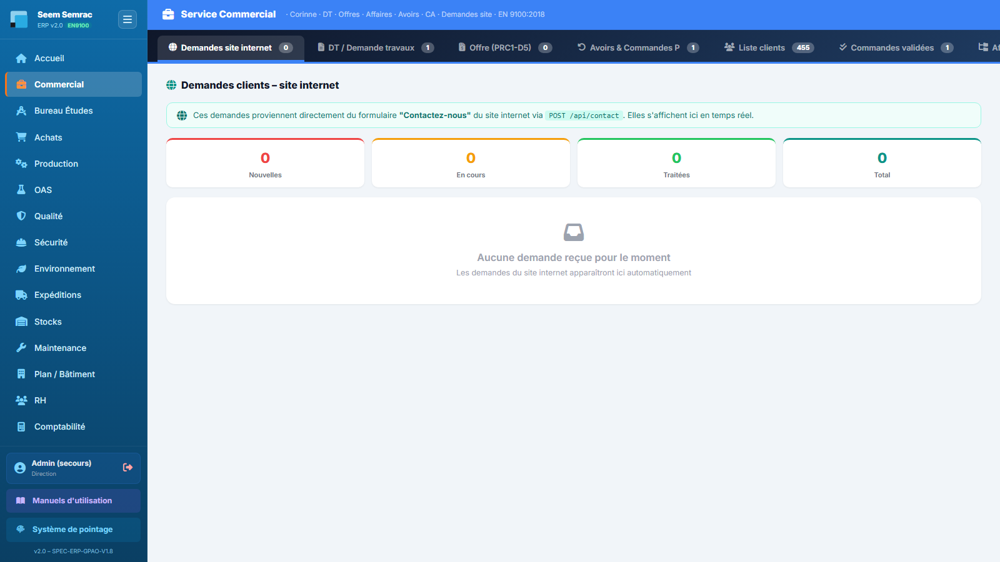
Demandes site internet — tuiles de comptage par statut et tableau des demandes reçues depuis le formulaire de contact du site.
Pas à pas
Ouvrez Commercial → Demandes site internet (c'est l'onglet affiché par défaut à l'arrivée sur le service).
Repérez les demandes au statut Nouveau — la tuile « Nouvelles » vous donne le compte d'un coup d'œil.
Lisez le message et les coordonnées du contact, puis cliquez sur le bouton Traiter de la ligne pour prendre la demande en charge.
Si la demande débouche sur un chiffrage, passez à l'onglet DT / Demande travaux pour créer la Demande de Travaux correspondante (le client sera créé au passage s'il est nouveau).
Règles & points d'attention
Les demandes arrivent automatiquement : il n'y a rien à saisir ici, uniquement à trier et traiter.
La priorité (normal / urgent / critique) est indiquée par une pastille de couleur — traitez d'abord les demandes critiques.
Astuce : l'onglet actif est mémorisé dans l'adresse de la page (ex. #dt, #offre) — vous pouvez mettre en favori l'onglet sur lequel vous travaillez le plus.
2
DT / Demande travaux
À quoi ça sert. La Demande de Travaux (DT) est l'acte de naissance d'une affaire : elle enregistre le client, les pièces demandées (référence, plan, quantités) et les exigences. Sa création attribue le numéro d'affaire unique qui suivra le dossier jusqu'à la facture. Une fois validée, la DT part au Bureau d'Études pour analyse et chiffrage.
Ce que vous voyez
En haut : un champ Rechercher… et le bouton Créer (ouvre le formulaire de nouvelle DT). L'onglet est divisé en deux sous-onglets à bascule, chacun avec son compteur :
Sous-onglet « DT enregistrées non finies »
Les DT en cours de saisie ou en attente de validation. Le tableau affiche : N° Affaire / DT, Client, Pièce(s) (avec quantités), Type, Analyste, Priorité, Statut et Actions. Trois boutons par ligne : Valider (envoie la DT au BE), Modifier (crayon, ouvre la fiche d'édition) et Supprimer (poubelle).
Sous-onglet « DT validées »
Les DT déjà envoyées au BE ou plus avancées dans le circuit. Les statuts que vous y rencontrerez : En attente analyse BENomenclature à faireDans la liste des offresCommande créée ✓Refus. Les lignes validées portent un badge vert « Validée » à la place du bouton Valider, mais restent modifiables (crayon).
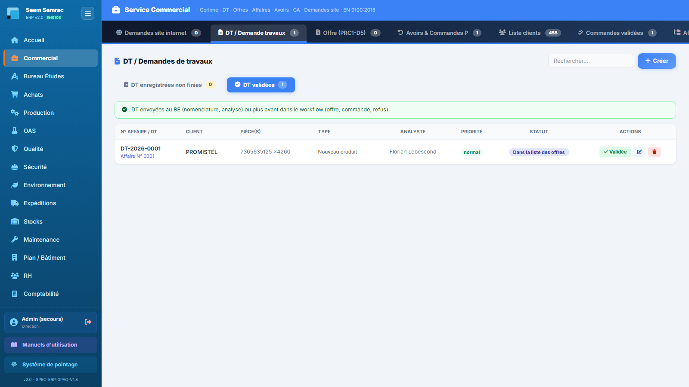
DT / Demande travaux — sous-onglets « non finies / validées » avec compteurs, et tableau des DT avec statut du circuit.
Pas à pas — créer une DT
Cliquez sur Créer : le formulaire « Nouvelle DT » s'ouvre. Le N° DT est attribué automatiquement (DT-2026-XXXX) — c'est le futur numéro d'affaire.
Recherchez le client dans le champ à autocomplétion. S'il n'existe pas, cliquez sur Nouveau client : un sous-formulaire s'ouvre (raison sociale obligatoire, SIRET, contact, email, téléphone, adresse, mode de facturation) ; le client créé est aussitôt sélectionné.
Choisissez la priorité (Normal / Urgent / Critique) et la date besoin du client.
Remplissez le premier bloc Produit (voir tableau des champs ci-dessous). Un point important : l'Activité (SEEM/SEMRAC) et le Type de DT se choisissent par produit — un produit peut être « Nouveau produit » et un autre « Produit à jour » dans la même DT.
Besoin de chiffrer plusieurs quantités pour la même pièce ? Cliquez sur + Ajouter une quantité : chaque case quantité donnera sa propre ligne de prix dans l'analyse du BE.
Ajoutez d'autres pièces avec Produit supplémentaire si l'affaire en compte plusieurs, puis cliquez sur Créer la DT. Elle apparaît dans « DT enregistrées non finies ».
Pas à pas — valider une DT (envoi au BE)
Dans « DT enregistrées non finies », cliquez sur Valider sur la ligne concernée et confirmez.
L'ERP oriente automatiquement la DT selon son contenu : s'il y a au moins une pièce nouvelle ou à mettre à jour, elle part dans la file Nomenclatures à créer du BE ; s'il s'agit d'une mise à jour de prix ou de pièces déjà à jour, elle part directement en Analyse DT du BE.
La DT bascule dans le sous-onglet « DT validées » avec le statut En attente analyse BE ou Nomenclature à faire. Quand le BE aura terminé son analyse, l'offre apparaîtra dans l'onglet Offre (PRC1-D5).
Formulaire « Nouvelle DT » — champ par champ
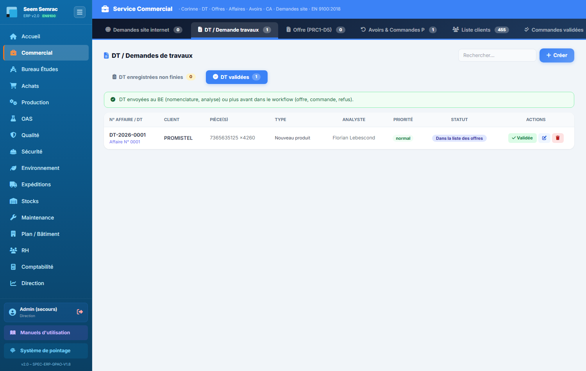
Formulaire Nouvelle DT — en-tête (client, priorité, date) puis un bloc par produit avec ses quantités, son activité, son type et ses exigences.
Champ
Saisie
Obligatoire
Explication
Client
Recherche / autocomplétion
Oui
Client existant, ou création à la volée via « Nouveau client ».
N° DT
Automatique (lecture seule)
—
Numéro d'affaire unique DT-AAAA-XXXX, repris par l'offre et la commande.
Priorité
Liste : Normal / Urgent / Critique
Non
Pilote la pastille de priorité dans les listes.
Date besoin
Date
Non
Date souhaitée par le client.
Réf. interne pièce
Texte (suggestions)
Oui (par produit)
N° de nomenclature / référence de la pièce chez nous.
Nom du plan
Texte (suggestions)
Non
Ex. PLAN-DISSIP-A24-v3.
Réf. pièce client
Texte (suggestions)
Non
Référence de la pièce chez le client (ex. LGR-A-20485).
Quantité
Nombre entier
Oui (par produit)
Quantité principale à chiffrer.
Quantités supplémentaires
Une case par quantité (bouton +)
Non
Chaque quantité ajoutée aura son propre prix dans l'analyse du BE.
Activité
Liste : SEEM / SEMRAC
Oui (par produit)
Site qui produira la pièce.
Type de DT
Liste : Maj prix / Maj produit / Nouveau produit / Produit à jour
Oui (par produit)
Détermine le circuit au BE (nomenclature à créer ou analyse directe).
Plan — PDF ou STEP
Fichier (.pdf, .step, .stp)
Non
Plan joint au produit, repris par le BE.
Exigences normatives
Cases : ISO 9001, EN 9100, REACH, RoHS, EN 13485
Non
Exigences client tracées jusque dans l'offre (bloc traçabilité).
Oxydation anodique sulfurique
Case à cocher
Non
Traitement de surface OAS ; ouvre l'option complémentaire ci-dessous.
Oxydation noire (en complément)
Case à cocher
Non
Visible uniquement si l'oxydation anodique est cochée.
Règles & points d'attention
À la création : le client est obligatoire, il faut au moins une pièce avec quantité, et chaque produit doit avoir son Activité et son Type de DT — sinon l'enregistrement est refusé avec un message d'erreur.
Auto-complétion du répertoire : quand vous saisissez une réf. client ou une réf. interne déjà connue, l'ERP relie automatiquement les autres champs vides (réf. interne ↔ réf. client ↔ plan) depuis le répertoire des références clients.
Le bouton Modifier ouvre une fenêtre d'édition complète (client, priorité, délai, pièces) ; les modifications sont automatiquement répercutées dans l'analyse DT du Bureau d'Études.
Verrou d'édition : si un collègue est déjà en train de modifier la même DT, l'ERP vous l'indique (« DT en cours d'édition par… ») et bloque l'ouverture — réessayez quand il aura terminé.
Attention : la suppression d'une DT (bouton poubelle) est définitive après confirmation. Ne supprimez jamais une DT déjà partie au BE sans vous coordonner avec lui.
3
Offre (PRC1-D5)
À quoi ça sert. C'est ici que le devis prend forme et se joue : les offres générées par le BE après analyse y arrivent « à traiter ». Le commercial fixe la marge, envoie l'offre au client, gère la négociation (versions successives) puis la validation — qui crée automatiquement la commande en Production.
Ce que vous voyez
Deux sous-onglets à bascule avec compteurs, et quatre tuiles de pipeline : Offre en attente, Attente réponse client, Acceptées, Annulées.
Sous-onglet « Offres à traiter »
Les offres en statut Offre en attente, En attente réponse client ou Négociation. Colonnes du tableau : N° OFF / Affaire (avec badge v2, v3… si l'offre a été révisée en négociation), DT liée, Client, Pièces · CRU · PV (par pièce : coût de revient unitaire et prix de vente calculé avec la marge de l'offre, plus les puces « ×quantité → PV/pièce » pour les chiffrages multi-quantités), Montant HT, Coût revient, Marge, Validité, Statut et Actions. Une pastille À relancer apparaît sous le statut quand une offre envoyée attend une réponse depuis plus de 7 jours.
Sous-onglet « Offres validées »
Les offres Acceptée ✓ par le client — prêtes à devenir des commandes (ou déjà transformées).
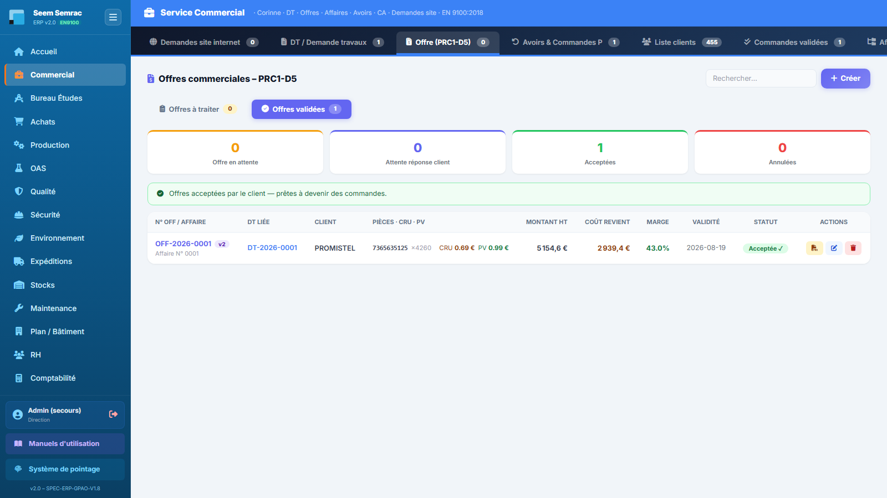
Offre (PRC1-D5) — pipeline en tuiles, tableau des offres avec détail CRU/PV par pièce et boutons d'action selon le statut.
Pas à pas — traiter une offre de bout en bout
Une offre arrive du BE en statut Offre en attente. Cliquez sur le bouton Éditer (crayon) : la page d'édition s'ouvre avec, pour chaque produit, le résumé des coûts issu de l'analyse DT (matière, accessoires, MO + machine, sous-traitance, frais généraux par lot, CRU par pièce) et le coefficient de marge à saisir (PV = CRU × coefficient ; le taux de marque, la marge en € et le PV se recalculent en direct). Le tableau interne « COEFFICIENT DE MARGES » est consultable depuis cette page. Les certifications exigées et les avoirs applicables du client y sont rappelés.
De retour sur la liste, cliquez sur Envoyer puis confirmez : l'offre passe en En attente réponse client.
Pour transmettre le devis, cliquez sur l'icône PDF : une fenêtre d'impression s'ouvre avec le devis au logo de la société (choisissez « Enregistrer en PDF »).
Si le client négocie : cliquez sur Négocier, indiquez éventuellement le point à négocier — l'offre est rouverte en révision (nouvelle version v2, v3…) et la page d'édition s'ouvre pour ajuster prix et marge. Le bouton d'envoi devient Renvoyer.
Si le client accepte : cliquez sur Valider. La fenêtre récapitule montant et marge et propose une date de livraison confirmée (facultative — la Production peut la fixer ensuite). En confirmant : l'offre passe en Acceptée ✓, la commande est créée (visible en Production « à programmer ») et les avoirs en cours du client sont automatiquement déduits.
Pas à pas — créer une offre manuellement
Cliquez sur Créer : le formulaire « Nouvelle offre » s'ouvre.
Sélectionnez la DT associée (seules les DT au statut « Dans la liste des offres » sont proposées), la date de validité et le montant HT ; le vendeur et le délai de livraison estimé sont facultatifs.
Cliquez sur Envoyer l'offre. Le numéro d'offre reprend le numéro d'affaire de la DT.
Règles & points d'attention
Marge = taux de marque : (PV − PR) / PV. Le coefficient multiplicateur est la référence : ×2 → 50 %, ×2,5 → 60 %, ×3,05 → 67 %.
Le PV affiché dans la colonne « Pièces · CRU · PV » est calculé avec la marge de l'offre (fixée par le commercial), pas avec une marge d'analyse.
La validation d'une offre est idempotente : si la commande existe déjà, l'ERP le signale (« déjà créée ») sans créer de doublon.
Une offre déjà envoyée n'a plus de bouton « Envoyer » : seuls Valider, Négocier, le PDF, l'édition et la suppression restent disponibles.
Astuce : surveillez les pastilles À relancer — plus de 7 jours sans réponse client, c'est le moment de rappeler.
Attention : pour le devis PDF, votre navigateur doit autoriser les fenêtres pop-up ; sinon l'ERP vous le signale et rien ne s'ouvre.
4
Avoirs & Commandes P
À quoi ça sert. Cet onglet regroupe deux suites du service après-vente : les avoirs accordés aux clients (avances, retours, gestes commerciaux) et les commandes prioritaires (Commandes P) issues des retours clients acceptés en refabrication côté Qualité. Les avoirs sont ensuite déduits automatiquement des factures ou de la commande suivante.
Ce que vous voyez
Deux sous-onglets à bascule : Avoirs (avec compteur) et Commandes P (compteur des commandes restant à lancer).
Sous-onglet « Avoirs »
Quatre tuiles : Avoirs actifs, Partiels, Clôturés, Total. Le tableau liste : N° Avoir, Client, Motif, Montant, Solde (restant à consommer, en vert s'il est positif), Date, Saisi par, Statut — ActifPartielClôturé, complété le cas échéant du badge de décision Direction — et Actions (modifier / supprimer).
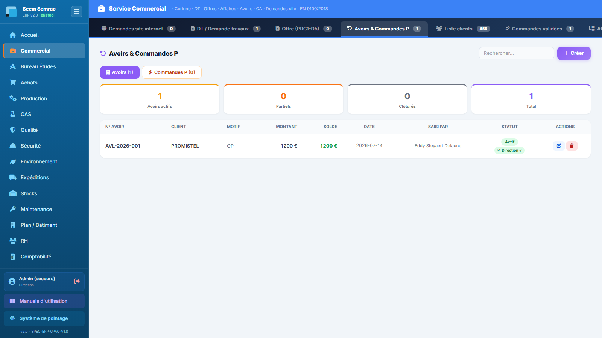
Avoirs — tuiles par statut et liste des avoirs avec montant, solde restant et suivi de qui a saisi.
Sous-onglet « Commandes P »
Le bandeau rappelle le circuit : un retour client accepté en relance (Qualité → NC client → « Retour ») crée une commande prioritaire numérotée CMDP-AAAA-XX sur l'affaire d'origine. Le tableau affiche : N° Commande P, Client, Réf. / Désignation, Qté, Coût revient unit. (ou la mention « à chiffrer »), Montant estimé, NC origine, Statut — À faire ou Lancée —, Date et l'action Lancer la production.
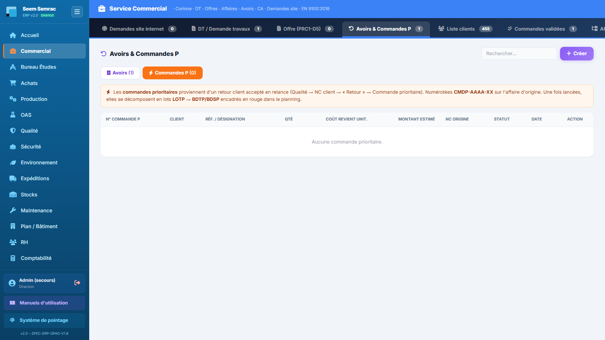
Commandes P — commandes prioritaires issues des retours clients, avec leur NC d'origine et le bouton de lancement en production.
Pas à pas — émettre un avoir
Cliquez sur Créer : le formulaire « Nouvel avoir » s'ouvre.
Sélectionnez le client et le type d'avoir : Avance (matière / outil / consignation — saisie par le Commercial) ou Réclamation (réservée au service Qualité).
Choisissez la restitution : « Déduire d'une facture en cours » ou « Déduire de la commande suivante » (l'avoir sera alors proposé automatiquement à la prochaine offre du client).
Facultatif : chargez une facture client (cela renseigne automatiquement l'affaire et sélectionne le client) et/ou rattachez l'avoir à une affaire. Un aperçu du numéro s'affiche : AV-AAAA-<affaire> si rattaché, AVL-AAAA-… (libre, incrémental) sinon.
Saisissez le montant, la date et le motif. Si nécessaire, cochez « Soumettre cet avoir à la validation de la Direction » — il apparaîtra alors dans la file « À valider » du service Direction.
Cliquez sur Émettre l'avoir. Il apparaît dans la liste en Actif ; son solde diminuera au fil des déductions jusqu'à Clôturé.
Pas à pas — lancer une commande prioritaire
Ouvrez le sous-onglet Commandes P et repérez les lignes À faire.
Cliquez sur Lancer la production puis confirmez : l'ERP crée la commande prioritaire, un lot LOTP et les bons de travail BDTP/BDSP, qui apparaissent encadrés en rouge dans le planning de Production.
La ligne passe en Lancée avec le numéro de la commande créée. Le suivi se poursuit côté Production.
Formulaire « Nouvel avoir » — champ par champ
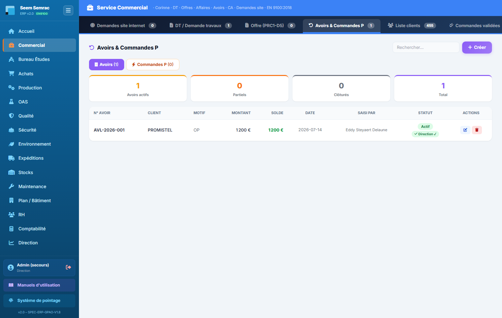
Formulaire Nouvel avoir — type, mode de restitution, rattachement à une facture ou une affaire, et case de validation Direction.
Champ
Saisie
Obligatoire
Explication
Client
Liste des clients
Oui
Bénéficiaire de l'avoir (rempli automatiquement si une facture est chargée).
« Commande suivante » = proposé automatiquement à la prochaine offre.
Origine
Liste : Commercial-avance / Achat de matière / Non-conformité
Non
« Achat de matière » ouvre le bloc de liaison des factures.
Facture d'affaire interne (cible)
Liste des factures
Non
Visible si origine = matière : facture sur laquelle l'avoir sera déduit.
Charger une facture client
Liste des factures
Non
Renseigne automatiquement l'affaire et le client.
Rattacher à une affaire
N° d'affaire (suggestions)
Non
Vide = avoir libre AVL-AAAA-… ; rempli = AV-AAAA-<affaire>.
Montant (€)
Nombre
Oui
Montant de l'avoir (doit être supérieur à 0).
Date de l'avoir
Date
Oui
Date d'émission.
Motif / Description
Texte libre
Oui
Justification de l'avoir.
Validation Direction
Case à cocher
Non
Soumet l'avoir à la file de validation de la Direction.
Règles & points d'attention
Avoir = prix de vente des pièces retournées (AV-AAAA-XX) ; Commande P = coût de revient (CMDP-AAAA-XX) : deux logiques différentes pour le même retour client.
Le bouton Modifier d'un avoir rouvre le même formulaire pré-rempli (titre « Modifier l'avoir ») ; l'enregistrement met à jour l'avoir existant.
Les avoirs « à déduire de la commande suivante » sont proposés automatiquement dans la page d'édition d'offre du même client.
Attention : le lancement d'une commande prioritaire crée immédiatement lot et bons de travail prioritaires dans le planning — assurez-vous que le coût de revient est chiffré et que la décision de refabrication est actée côté Qualité.
5
Liste clients
À quoi ça sert. Le référentiel clients de l'entreprise : identité, contacts multiples, adresses, mode de règlement, et le chiffre d'affaires facturé par client. C'est ici que l'on crée et met à jour les fiches ; les informations sont propagées automatiquement aux DT, offres et commandes.
Ce que vous voyez
En haut : le compteur de clients, l'outil de sélection multiple (suppression groupée), une recherche ciblée par champ (Raison sociale, Contact, Email, Téléphone, Mode facturation, SIRET), le bouton Exporter (Excel) — tous les clients et les produits qu'ils ont commandés, avec feuille Données et feuille TCD — et le bouton Nouveau client.
Une barre de filtres Activité (Tous / SEEM / SEMRAC / SEEM & SEMRAC, chacun avec son compte) et des boutons de tri : A → Z, CA de l'année en cours, CA total (le CA est le chiffre d'affaires facturé HT). Le tableau affiche : Raison sociale (avec l'identifiant), Contact (et sa fonction), Email, Téléphone, Mode facturation, SIRET, CA année, CA total, Crédits (pastille orange si le client a un avoir en cours) et Actions (crayon Modifier / poubelle Supprimer). Un clic n'importe où sur la ligne ouvre la fiche client.
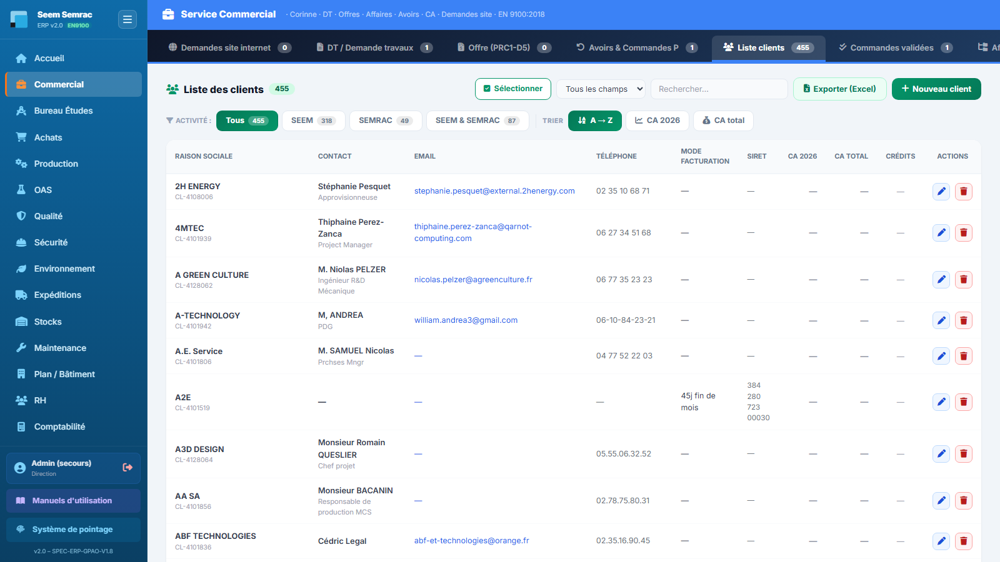
Liste clients — filtres par activité, tris par CA, colonnes de CA facturé et accès à la fiche client d'un clic sur la ligne.
Pas à pas — créer ou modifier un client
Cliquez sur Nouveau client (ou sur le crayon d'une ligne existante) : la fenêtre client s'ouvre.
Saisissez la raison sociale (seul champ obligatoire). Astuce : saisissez d'abord le N° TVA intracommunautaire — le SIRET se remplit automatiquement (retrait du préfixe pays et des espaces).
Choisissez le mode de règlement (Proforma, Virement 30/45/60 j, 30/45/60 j net ou fin de mois, Traite 30 j) : il sera appliqué par défaut aux factures de ce client.
Ajoutez les contacts (nom, fonction, email, téléphone) avec « Ajouter un contact » ; cochez la puce ◉ du contact principal.
Renseignez l'adresse postale (rue, code postal, ville). Si la facturation part ailleurs, cochez « Adresse de facturation différente » et complétez le bloc dédié.
Cliquez sur Créer le client (ou Enregistrer en modification).
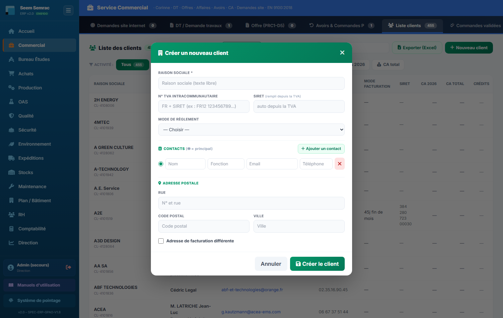
Fenêtre client — seule la raison sociale est obligatoire ; le N° TVA intracommunautaire remplit le SIRET automatiquement, le mode de règlement devient le défaut des factures, et les blocs contacts (avec la puce du contact principal) & adresse (option « adresse de facturation différente ») se déplient à la demande. À l'enregistrement, la fiche est immédiatement disponible dans les DT, offres et commandes.
Pas à pas — consulter la fiche client
Cliquez sur la ligne du client : la fiche s'ouvre avec l'identité complète (contact principal, email, adresse, SIRET, TVA, mode de règlement, mode de livraison).
Le bloc Pilotage 360 montre : CA facturé, encours impayé, marge cumulée, offres gagnées / perdues et crédit, puis les tableaux Commandes et Factures.
Le tableau Produits achetés par ce client croise réf. interne ↔ réf. client ↔ désignation ↔ plan (ouvrable d'un clic s'il est en GED) ↔ affaires rattachées : chaque numéro d'affaire est cliquable vers sa fiche.
Règles & points d'attention
Le CA affiché est le chiffre d'affaires facturé (HT) : un client sans facture affiche « — » même s'il a des commandes en cours.
La modification d'un client est protégée par le verrou d'édition : si un collègue édite déjà la fiche, vous êtes prévenu et devez attendre.
Les filtres Activité et la recherche se cumulent : vous pouvez chercher « virement » dans le mode de facturation en n'affichant que les clients SEEM.
Attention : la suppression d'un client (individuelle ou groupée) est définitive après confirmation. Vérifiez qu'aucune affaire en cours ne lui est rattachée.
6
Commandes validées
À quoi ça sert. La vue de contrôle du carnet de commandes : toutes les commandes clients validées des 365 derniers jours, avec leur montant, leur date de livraison et leur état d'avancement. C'est un onglet de consultation — la commande naît de la validation d'une offre (onglet Offre), pas d'une saisie directe ici.
Ce que vous voyez
Le compteur de commandes sur un an, une recherche ciblée (Client, Pièce(s), Statut, N° affaire) et le tableau : N° CMD / Affaire, Client, Pièce(s), Montant, Date CMD, Livraison et Statut. Les statuts de commande : À programmerAttente prépaAttente matièreEn productionÀ expédierExpédié ✓Annulé.
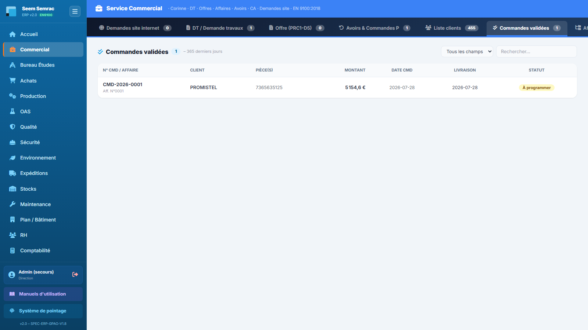
Commandes validées — carnet de commandes sur 365 jours avec statut d'avancement de chaque commande.
Pas à pas
Utilisez la recherche ciblée pour retrouver une commande : choisissez le champ (ex. « N° affaire ») puis tapez votre critère — la liste se filtre en direct.
Lisez le statut pour connaître l'étape en cours ; pour le détail production (lots, BDT, coûts), ouvrez l'affaire correspondante dans l'onglet Affaires (circuit).
Si un client demande où en est sa commande, la colonne Livraison donne la date confirmée (ou « — » si la Production ne l'a pas encore fixée).
Règles & points d'attention
La liste est limitée aux 365 derniers jours pour rester lisible ; les commandes plus anciennes restent consultables via la fiche affaire.
Le numéro de commande reprend le numéro d'affaire : CMD-2026-XXXX = OFF-2026-XXXX = DT-2026-XXXX.
Bon à savoir : l'avancement fin (BDT soldés, coûts réels, marge) se consulte dans la fiche affaire ou côté Production — cet onglet donne la photo commerciale du carnet.
7
Affaires (circuit)
À quoi ça sert. La vue « dossier » du Commercial : chaque numéro d'affaire regroupe tout son circuit — DT → offre → commande → production → livraison → facturation. En un tableau, vous voyez où en est chaque affaire ; en un clic, vous ouvrez sa fiche 360 complète.
Ce que vous voyez
Le tableau des affaires, triées de la plus récente à la plus ancienne : N° Affaire, Client, Circuit (trois pastilles DT / Offre / Commande, colorées si l'étape existe, grisées sinon), Montant (celui de la commande, sinon de l'offre), Statut (le plus avancé du circuit) et le bouton Ouvrir.
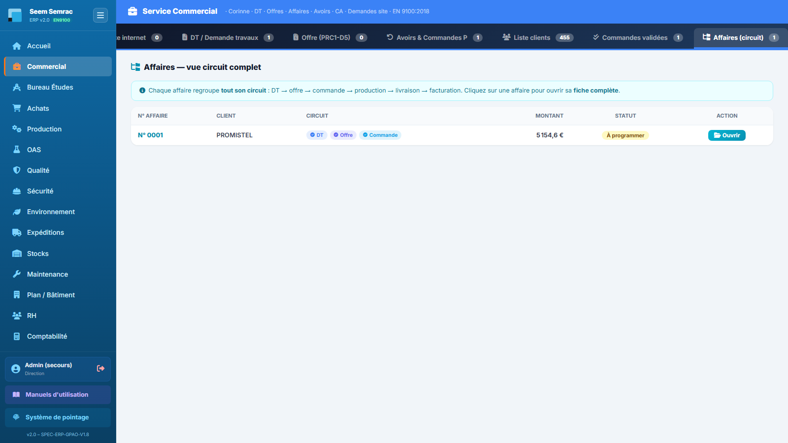
Affaires (circuit) — une ligne par numéro d'affaire avec les pastilles d'avancement DT / Offre / Commande.
Pas à pas — exploiter la fiche affaire 360
Cliquez sur une ligne (ou sur Ouvrir) : la fiche « Affaire N° … » s'ouvre.
En tête, le bloc Pilotage 360 : montant offre, montant commande, CA facturé, coût de revient, marge (en € et en %) et avancement (BDT soldés / total). Juste dessous, le chemin de l'affaire en 6 étapes : DT, Offre, Commande, Production, Livraison, Facturation — chaque étape s'allume quand elle est franchie.
Descendez pour le détail, tableau par tableau : demandes de travaux, offres, commandes, lots de production, bons de travail avec opérateurs et temps, matières consommées, bons de livraison, factures, PV de contrôle, non-conformités et avoirs liés. Les liens « Analyse », « Éditer », « Suivi » renvoient directement vers le BE, l'édition d'offre ou le suivi de production.
Le bouton « Retour aux affaires » vous ramène à la liste.
Règles & points d'attention
L'affaire agrège tout ce qui porte le même numéro d'affaire : c'est le fil conducteur de l'ERP — d'où l'importance de ne jamais créer d'offre ou de commande « hors DT ».
Si une affaire n'a ni DT, ni offre, ni commande, la fiche l'indique clairement (« Aucune donnée trouvée »).
La marge affichée est calculée sur le CA facturé quand il existe, sinon sur le budget : elle s'affine au fil de la vie de l'affaire.
Astuce : la fiche affaire est le meilleur écran à ouvrir pendant un appel client — tout le dossier y est, de la demande initiale à la facture.
8
Dashboard Commercial
À quoi ça sert. Le tableau de bord de pilotage du service : chiffre d'affaires commandé, charge du pipeline (DT chez le BE, offres sans réponse, commandes à programmer) et poids des avoirs actifs. Il se calcule en direct sur les données réelles du service.
Ce que vous voyez
Quatre indicateurs en tuiles : CA commandé du mois en cours (avec le cumul annuel en sous-titre), DT en attente BE (à analyser), Offres en cours (sans réponse client) et Avoirs actifs (montant total et nombre). En dessous : le graphique en barres CA commandé mensuel de l'année (un mois par ligne jusqu'au mois courant, avec le total cumulé), le bloc Top Clients, puis le Pipeline Commercial en trois colonnes — DT en attente BE, Offres en attente de réponse, Commandes à programmer — chaque affaire y figurant sous forme de carte (numéro + client).
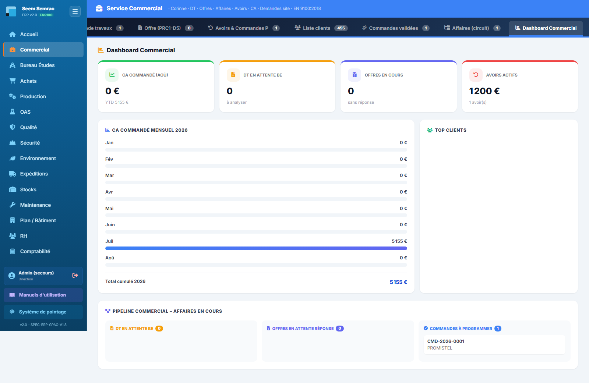
Dashboard Commercial — KPI du mois, CA mensuel de l'année et pipeline des affaires en cours en trois colonnes.
Pas à pas
Commencez la journée par ce tableau de bord : les trois colonnes du pipeline vous disent immédiatement où agir (relancer le BE, relancer un client, pousser une commande vers la programmation).
Comparez le CA du mois au cumul annuel pour situer votre progression ; le graphique mensuel montre la saisonnalité.
Surveillez la tuile Avoirs actifs : un montant qui grimpe signale des retours ou avances à solder.
Règles & points d'attention
Le CA de ce tableau de bord est le CA commandé (montants des commandes validées de l'année), à distinguer du CA facturé affiché dans la Liste clients.
Un tableau de bord Commercial plus complet et filtrable existe aussi dans le service Tableaux de bord de la sidebar.
Bon à savoir : les compteurs affichés sur les onglets du service (badges) reprennent les mêmes chiffres : nombre de demandes site, de DT, d'offres à traiter, d'avoirs, de clients, de commandes et d'affaires.